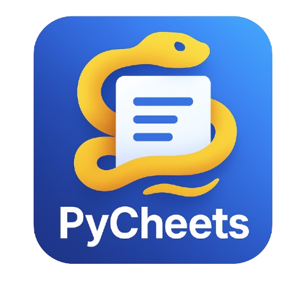
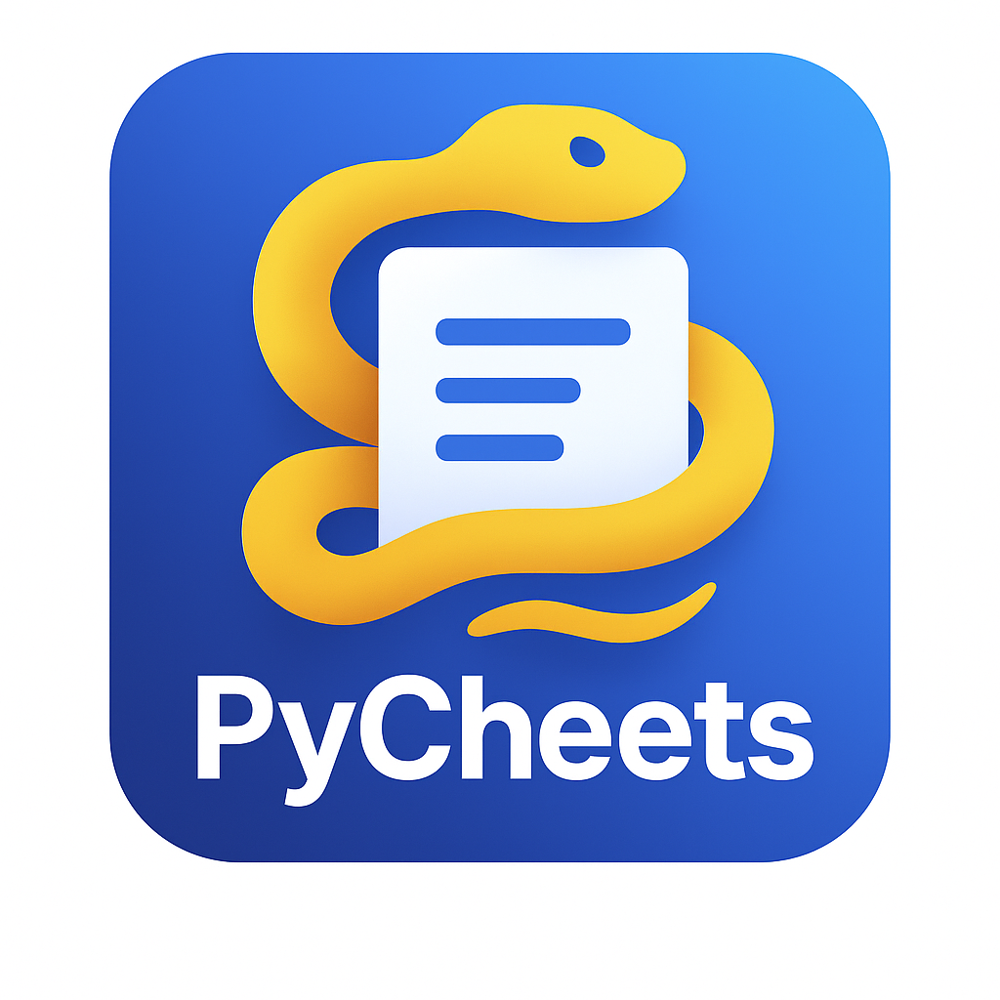

PyPath Cheatsheet
My Stats
🌙
☀️
16
Stages
175+
Topics
100%
Free
∞
Learn
← Previous
Next →
↑

Install Python Mastery App
Learn Python anywhere — offline too!
Install Now
Maybe Later
×
Your Learning Stats
Track your progress
🔥
0
Day Streak
0
Topics Viewed
0
Stages Visited
0m
Time Spent
Today
Last Visit
🔔 Daily Reminder
Get notified to learn daily
🔗 Share PyPath
🔄 Reset All Stats
🤖
🤖
PyPath AI Assistant
Online
×
🤖
👋 Hi! I'm your Python learning assistant. Ask me anything about Python programming!
What are lists?
How to use functions?
Explain OOP
➤